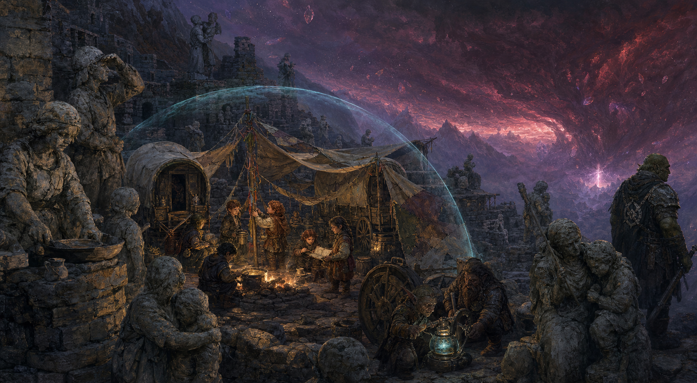
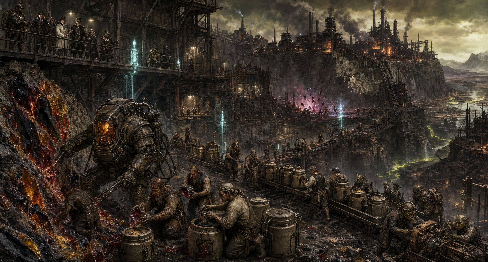
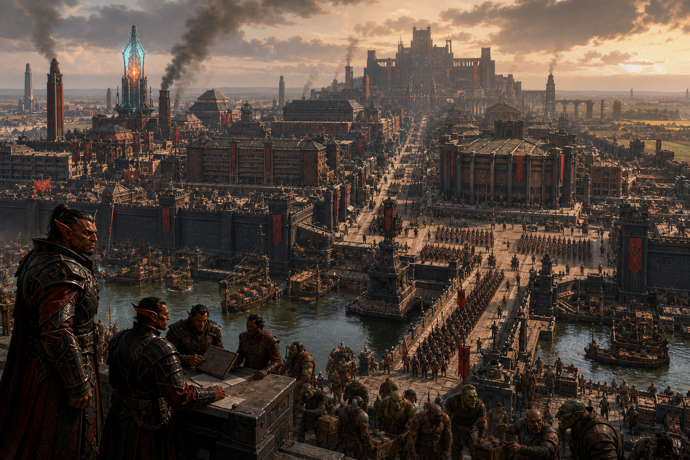
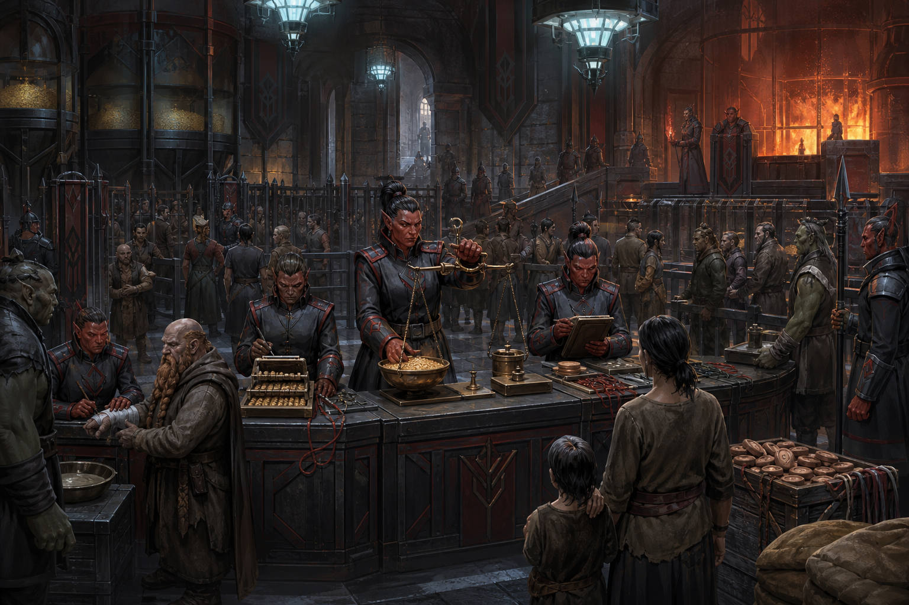
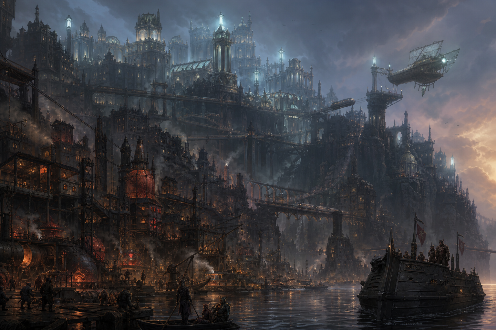
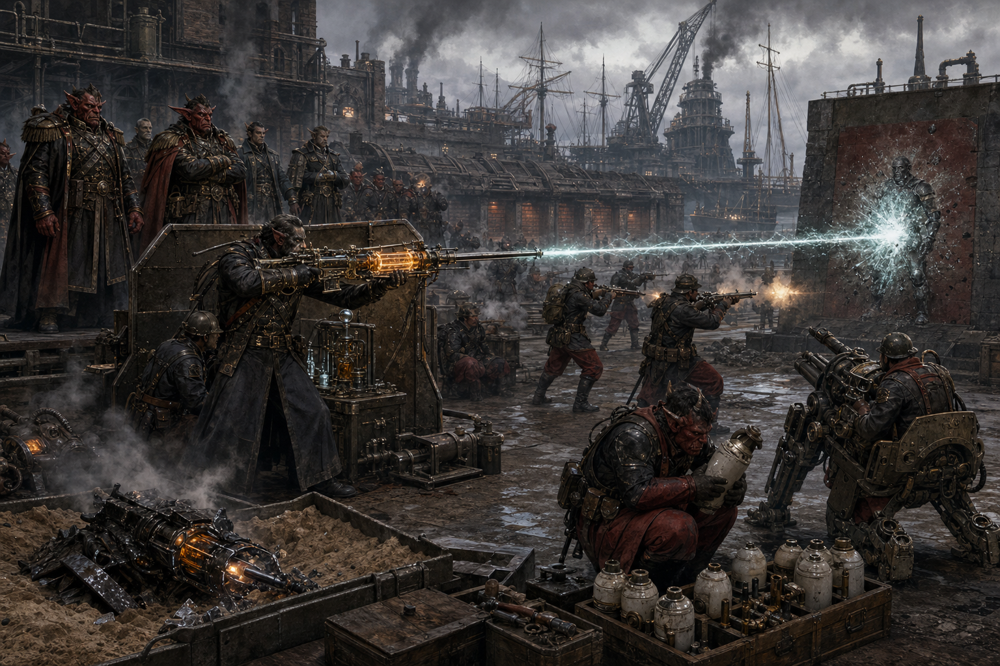
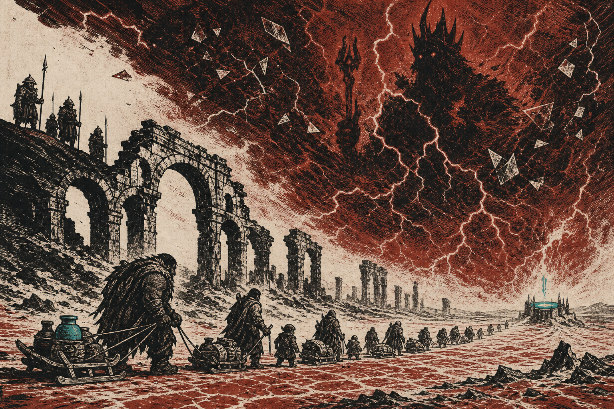
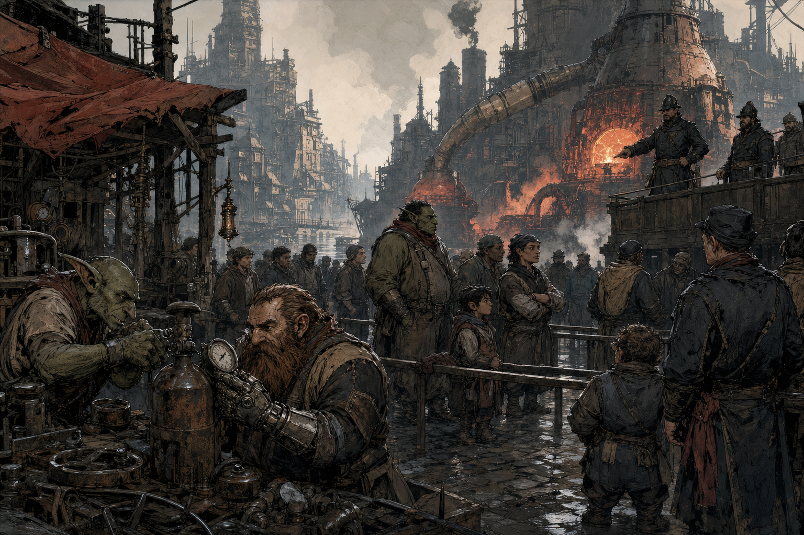

I. The Godfall
Lord Cha'mutte won the Great War.
His armies reached through the Divine Veil, killed the Embodied Gods, and shattered the Land of the Dead, a moment later known as the Godfall. The Godfall did not fall evenly. The stoneborn became statues where they stood; lizardfolk aged through centuries in a generation; no elf child was ever born again, and the ageless survivors slowly departed a world falling apart they could no longer protect.
Dwarven halls beneath the mountains fell dark as runic magic failed, and widespread famine drove a refugee crisis of epic proportions as dwarven cities emptied. Halflings woke to the Quiet, severed from the ancestral mind that had once made strangers kin. Only the orcs received something that could be called a gift: Thark's command vanished from their blood, leaving them free to decide whether freedom could ever justify the crime that purchased it.

II. What Remained
With the Godfall, divine magic vanished from the world: the prayers of the desperate no longer granted miracles, and sickness and famine spread.
In the place of divine miracles, a new magic: chaos glass, crystallized in the wounds left by the Godfall. Dangerous, poisonous, and difficult to control, it could be made to yield heat, motion, or explosive force, but only at risk of catastrophe.

Out of this chaos and destruction, the world changed.
III. The Legion-States
Hobgoblins, who had never relied on gods or divine magic, emerged unbroken and strong. Their battlemages still commanded fire and their armies in the field quickly struck disorganized foes suddenly bereft of their gods. They did not conquer everywhere, but legion-states spread through the wreckage, maintained by the slave camps of those they conquered. The human kingdoms of the west fell before them, or negotiated to survive.


IV. Chardon, Two Centuries Later

Two centuries later, the city of Chardon is thriving, ruling over growing colonial empire powered by chalyte and chaos glass. The pale towers and skyships of the city hide the compromises that power its progress: stolen labor from the underclass of refugees, canals poisoned by chaos magic, open treaties with hobgoblin slaver kingdoms, and a hunger for the glitter of progress whatever the cost.

Beyond Chardon’s ports and defended corridors, the world is a patchwork of hobgoblin domains, isolated settlements, ruined roads, and poisoned wilderness; in eastern Dunmar, rumors tell of sorcerer-kings who rule the last wells.


V. Terrible Wonders
This is a world of terrible wonders, where miners excavate chalyte in chaos-powered exoskeletons to power skyships that carry the rich in safety above the world below, while factory workers routinely die in explosions caused by concentrated chaos glass.
It is a world where chalyte-powered magitech can achieve remarkable feats, while the cost is never seen by those with money, status, and power.
It is a world where magic touches everything, but mercy is scarce, and those who wield magic and those who pay the cost are rarely the same.